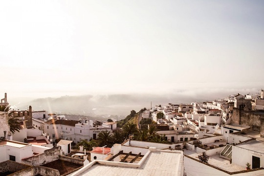

What others say about escondrijo
Over the years people have been kind enough to say a lot of nice things about escondrijo and their time here.
Boutique B&Bs, or micro hotels, are beginning to mushroom across Europe. Escondrijo almost defines the type. Its cool interiors, easy intimacy and fabulous prices make this a perfect place, and those looking for something hip and informal will be in heaven here.i-escape.com
We were selected as the only coastal hotel in Spain to be included in the inaugural Mr & Mrs Smith: European Coast & Country guide.
Tenette Ludlow and her partner, Nigel Anderson, are two British refugees from urban servitude who brought this former chapel back from the dead last year. They have made something that, depending on how you look at it, is either a tiny, intimate and quite stunning boutique hotel or a private home with four rooms set aside for paying guests. And that is the great thing about it. For as long as you are in Vejer - a month or just a night - this is your home. And it's not some shonky self-catering duplex with a view of the petrol station; it is a dream of the Spanish Golden Age.Giles Coren for Mr and Mrs Smith
To avoid confusion, although we set up escondrijo as a mini-boutique hotel, we now live onsite and have taken over some of the rooms for ourselves. We rent the Top Room and the Hammock Room by the night, and also at times offer the whole house for rent by the week.
Red magazine online:
...not just one of the best boutique B&Bs you’ll find in the south of Spain, but also pretty much anywhere else.Ben Cooper for redonline.co.uk
Highs:
- The combination of gorgeous original features and stylish interiors
- The feeling of having the run of the place
- The friendly, passionate owners Nigel and Netty
- Free WiFi - there’s even a little laptop for guest use
- The little extras - CDs in the rooms, tea-making facilities, an honesty bar and plenty of magazines and a library for some excellent holiday reading
Lows:
- There are only three rooms, so getting in during peak season can be tricky
- The owners are not there 100% of the time and the welcome is friendly and informal, so if you expect a hotel-like experience where staff are permanently on your beck and call, it’s not the place
Daily Telegraph Hotel Watch
The location Hidden within the maze of Vejer's quiet cobbled streets, in the heart of one of Andalusia's pretty whitewashed hilltowns. It's an ideal base: 10 minutes' drive from a lengthy stretch of wild beach, a day trip away from Cadiz and Seville and a one-hour journey from Jerez international airport.
The draw This is by far the best small boutique hotel in the area. Opened in June, the centuries-old house has been lovingly restored, maintaining Moorish features and feel but with 21st century swish. With wooden doors, solid shutters, tiled floors, a gallaried internal courtyard and views of North Africa from the roof terrace, it has irresistible impact.
The drawbacks The shared breakfast table could be bigger - some people aren't designed for morning smalltalk.
The guests All nationalities - and mainly couples.
The rooms Four, with individual design and layout. All have luxurious beds, huge showers, CD players and music library. Try Number 3, the "romance" room,which has a colonial-style lounge area, high ceilings and a gorgeous bedroom painted deep burgundy, with sexy lighting. Two rooms have their own private terrace.
The service Warm,easy-going and just right.
The food Breakfast only - but it is superb. There's a fridge, well stocked bar, and snack-making facilities in each room. Barbecues on the terrace are organised on request. There are dozens of restaurants in the old town. The best is El Jardin del Califa, serving mouth-watering Moroccan cuisine in an intimate garden illuminated by candlelight (booking essential).
More press:
High Jinks Escondrijo is the perfect micro boutique hotel, with just four spacious Moorish-contemporary suites set around a central patio and winding stairways. ...The hotel is called Escondrijo ('hidden place'), it's in the Callejon Oscuro ('dark alley'), and you really couldn't ask for a more romantic hideaway.Condé Naste Traveller
My Kind of Town: Vejer Where is the best place to stay? Escondrijo on Callejón Oscuro, which is a small boutique hotel, five minutes from the main square. It's owned and run by a charming English couple, Tenette Ludlow and Nigel Anderson. You'll never feel crowded as there are only four rooms/suites, and these are comfortable, stylish and, at around £68 per night, ridiculously cheap. Our favourite, Room IV, has its own roof terrace.Tim Hart for the Daily Telegraph
More online reportage
Econdrijo is one of those hotels where the view and the setting are so great you almost forget to take picture of the interiors. It’s located in this little white jewel of a town caller Vejer de la Frontera, in a soulful old village house. It’s a small and intimate place, with a simple yet refined feel.The Voyageur
...a sexy little boutique hotel of sleek, stylish, contemporary ways, cut with jewel-like tiles and lush fabrics. The bottom of the house is the traditional open patio which serves as public space, with a deliciously cushioned cave of a tv room, an honesty bar and a little internet work station. There's more public space at the top of the house on a rooftop terrace, complete with sleek loungers and the views for which Vejer is justly famous. Plenty of thought (and not a little cash) has gone into the restructuring of Escondrijo's rooms. There are just four of them and each is different, though they share lofty spaciousness, charming original features (beams, stonework) and contemporary, comfortable furnishings.Travel Intelligence